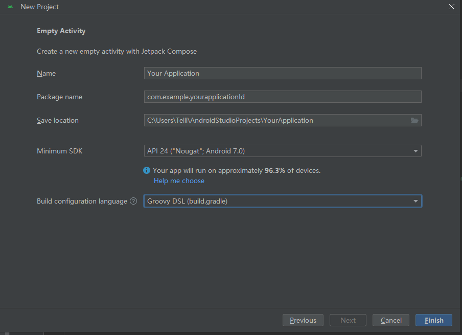
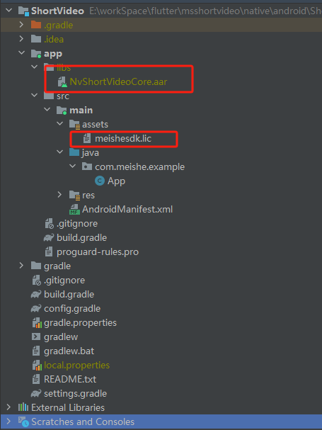

⚠️ Note: 需要在真机上运行，模拟器暂不支持
private void testCompileConfig() {
mVideoConfig = NvModuleManager.get().getConfig();
if (null == mVideoConfig) {
mVideoConfig = new NvVideoConfig();
}
NvCompileConfig compileConfig = mVideoConfig.getCompileConfig();
Map<String, Object> compileMap = new HashMap<>();
compileMap.put(VIDEO_ENCODEC_NAME, "hevc");
compileConfig.setConfigure(compileMap);
// compileConfig.setFps(30);
mVideoConfig.setCompileConfig(compileConfig);
}
NvPublishInfo publishInfo = NvModuleManager.get().getPublishInfo();
// 单张图片路径
String coverPath = publishInfo.getCoverPath();
// 音乐信息
NvMusicInfo musicInfo = publishInfo.getMusicInfo();
// 多张图片路径集合
List<String> imagesPath = publishInfo.getImagesPath();
// 视频路径
String videoPath = publishInfo.getVideoPath();
boolean onlyHaveMultipleImage = NvModuleManager.get().isOnlyHaveMultipleImage();
private void testCaptureConfig() {
mVideoConfig = NvModuleManager.get().getConfig();
if (null == mVideoConfig) {
mVideoConfig = new NvVideoConfig();
}
NvCaptureConfig captureConfig = mVideoConfig.getCaptureConfig();
// NvCaptureBottomMenuItem.image
// NvCaptureBottomMenuItem.video
// NvCaptureBottomMenuItem.smart
captureConfig.setDefaultBottomMenuSelectItem(NvCaptureConfig.NvCaptureBottomMenuItem.video);
mVideoConfig.setCaptureConfig(captureConfig);
}
private void testShadowLayer() {
mVideoConfig = NvModuleManager.get().getConfig();
if (null == mVideoConfig) {
mVideoConfig = new NvVideoConfig();
}
// 设置阴影颜色
mVideoConfig.setShadowColor("#FC3E5A");
// 设置阴影偏移量
NvShadowOffsetConfig nvShadowOffsetConfig = new NvShadowOffsetConfig(0, 1);
mVideoConfig.setShadowOffset(nvShadowOffsetConfig);
}
// public interface OnCompileImageListener {
// void onCompileFinished(boolean isSuccess, String path);
// }
public interface OnCompileImageListener {
void onCompileFinished(boolean isSuccess);
}
// path 统一从NvPublishInfo获取
NvModuleManager.get().getPublishInfo();
public void downloadPrefabricatedMaterial(Activity activity, OnAssetsRequestListener onAssetsRequestListener)
//拍摄入口
- public void openCapture(Activity activity, NvVideoConfig videoConfig, NvMusicInfo musicInfo, OnAssetsRequestListener onAssetsRequestListener);
//合拍入口
- public void startDualCapture(Activity activity, NvVideoConfig videoConfig, OnAssetsRequestListener onAssetsRequestListener);
//剪辑入口
- public void openEdit(Activity activity, NvVideoConfig videoConfig, OnAssetsRequestListener onAssetsRequestListener);
详见：美摄sdk产品概述
新建Android 工程
运行File—new—New Project， 进行如下设置后，点击finish

将aar包到libs目录下
将NvShortVideoCore. aar包，放到libs目录下
将meishesdk.lic 放asset目录下

meishesdk.lic 是通过美摄官网申请的license，该license和appid绑定
在美摄官网注册用户后，创建应用，配置appid，由美摄商务同事开通授权后，可在应用信息中下载授权文件。
SDK授权和App的appld绑定。未授权时，SDK全功能不再检查授权，都可以使用，绘制的画面会带MEISHE水印。
创建依赖项
implementation rootProject.ext.dependencies.extMutilDex
implementation rootProject.ext.dependencies.extAndroidXDesign
implementation rootProject.ext.dependencies.extAppcompat
implementation rootProject.ext.dependencies.extAppcompatRecycler
implementation rootProject.ext.dependencies.extConstraintLayout
//Gson
implementation rootProject.ext.dependencies.extGoogleGson
implementation rootProject.ext.dependencies.extWebpdecoder
//Utils
implementation rootProject.ext.dependencies.utils
//BRVAH
implementation rootProject.ext.dependencies.brvah
// glide 4.6.1~4.9.0 (exclude broken version 4.6.0, 4.7.0)
implementation rootProject.ext.dependencies.extBumptechGlide
annotationProcessor rootProject.ext.dependencies.extGlideAnnotation
//permission
implementation rootProject.ext.dependencies.permissionx
//Smart refresh
implementation rootProject.ext.dependencies.smartRefreshLayout
implementation rootProject.ext.dependencies.smartRefreshHeader
//room
implementation rootProject.ext.dependencies.room
annotationProcessor rootProject.ext.dependencies.roomComplier
//okhttp
implementation rootProject.ext.dependencies.extOkhttp
//exoplayer
implementation rootProject.ext.dependencies.exoplayer
//eventBus
implementation rootProject.ext.dependencies.eventBus
依赖项见 config.gradle 配置
App 需要在以下权限，否则将无法使用短视频模块。
<uses-permission android:name="android.permission.SYSTEM_ALERT_WINDOW" />
<uses-permission android:name="android.permission.CAMERA" />
<uses-permission android:name="android.permission.RECORD_AUDIO" />
<uses-permission android:name="android.permission.WRITE_EXTERNAL_STORAGE" />
<uses-permission android:name="android.permission.READ_EXTERNAL_STORAGE" /> <!-- <uses-permission android:name="android.permission.MOUNT_UNMOUNT_FILESYSTEMS" /> -->
<uses-permission android:name="android.permission.INTERNET" />
<uses-permission android:name="android.permission.ACCESS_NETWORK_STATE" />
<uses-permission android:name="android.permission.VIBRATE" />
<uses-permission android:name="android.permission.WAKE_LOCK" />
<uses-permission android:name="android.permission.ACCESS_NOTIFICATION_POLICY" /> <!-- <uses-permission android:name="android.permission.INTERNET" /> -->
<uses-permission android:name="android.permission.ACCESS_WIFI_STATE" />
<uses-permission android:name="android.permission.CHANGE_WIFI_STATE" /> <!-- 用于进行网络定位 -->
<uses-permission android:name="android.permission.ACCESS_COARSE_LOCATION" /> <!-- 用于访问GPS定位 -->
<uses-permission android:name="android.permission.ACCESS_FINE_LOCATION" /> <!-- 用于读取手机当前的状态 -->
<uses-permission android:name="android.permission.REQUEST_INSTALL_PACKAGES" />
<uses-permission android:name="android.permission.EXPAND_STATUS_BAR" />
在美摄官网注册用户后，创建应用，配置appid，由美摄商务同事开通授权后，可在应用信息中下载授权文件。
需要将授权.lic文件添加到App工程的asset目录下
执行NvModuleManager.initSdk("assets:/meishesdk.lic") 方法，进行sdk授权
SDK授权和App的appld绑定。未授权时，SDK全功能不再检查授权，都可以使用，绘制的画面会带MEISHE水印。
短视频模块用到的滤镜、贴纸、音乐等文件均通过网络接口获取。通过设置host的形式配置
定义在NvsServerClient.java 文件中
/*! \if ENGLISH
*
* \brief Init net host
* \param application The application
* \param host the host
* \param complatetionHandler
* \else
*
* \brief 初始化网路
* \param application app
* \param host host
* \endif
*/
public void initConfig(Application application, String host)
在EngineNetApi.java 里，定义了各种功能接口，可以修改以下变量，进行功能接口配置
/**
* 根据分类获取素材列表
* Get a list of materials by category
*/
public static String NV_ASSET_REQUEST_URL = "materialcenter/mall/custom/listAllAssemblyMaterial";
/**
* 根据素材类型获取素材分类列表
* Gets a classified list of materials based on their type
*/
public static String NV_ASSET_CATEGORY_URL = "materialcenter/appSdkApi/listTypeAndCategory";
/**
* 获取字体列表
* Get font list
* materialcenter/appSdkApi/material/listAll
*/
public static String NV_ASSET_FONT_URL = "materialcenter/listFont";
/**
* 获取音乐列表
* Get music list
*/
public static String NV_ASSET_MUSICIANS_URL = "materialcenter/appSdkApi/listMusic";
/**
* 把素材的id作为参数传入，获取到素材下载的链接
* Pass in the id of the material as a parameter to get the link to the material download
*/
public static String NV_ASSET_DOWNLOAD_URL = "materialcenter/mall/custom/materialInteraction";
/**
* 获取预置素材
* Get the Prefabricated material for the project
*/
public static String NV_ASSET_PREFABRICATED_URL = "materialcenter/beautyAssets/latest";
/**
* 一键成片
* AutoCut
*/
public static String NV_ASSET_AUTOCUT_URL = "materialcenter/recommend/listTemplate";
/**
* 获取模版的标签分类
* Gets the label classification of the template
* materialcenter/appSdkApi/listTemplateTag
*/
public static String NV_ASSET_TAG_URL = "materialcenter/listTemplateTag";
/** 公共参数
*Default parameters
*/
NvsServerClient.MallInfo.CLIENT_ID = NV_ClientId;
NvsServerClient.MallInfo.CLIENT_SECRET = NV_ClientSecret;
NvsServerClient.MallInfo.ASSEMBLY_ID = NV_AssemblyId;
短视频模块依赖的素材包可根据需要选择。预制素材详见：短视频模块预制素材
模块方法主要定义在NvModuleManager.java 文件中
/** \if ENGLISH
*
* \brief InitSdk
* @param licPath the licPath
* \else
*
* \brief 美摄SDK授权
* @param licPath 授权文件
* \endif
*/
public void initSdk(String licPath)
/** \if ENGLISH
*
* \brief Open capture
* @param activity the activity
* @param videoConfig the config information
* @param musicInfo the config music information
* \else
*
* \brief 打开拍摄
* @param activity 授权文件
* @param videoConfig 配置信息
* @param musicInfo 音乐信息
* \endif
*/
public void openCapture(Activity activity, NvVideoConfig videoConfig, NvMusicInfo musicInfo)
/** \if ENGLISH
*
* \brief Open dual capture.Open the album, and jump to the dual capture activity.
* @param activity the activity
* @param videoConfig the config information
* \else
*
* \brief 打开合拍 即跳转相册，进入合拍页面
* @param activity activity
* @param videoConfig 配置信息
* \endif
*/
public void openDualCapture(Activity activity, NvVideoConfig videoConfig)
/** \if ENGLISH
*
* \brief Open dual capture.Open the album, and jump to the dual capture activity.
* @param activity the activity.
* If you need to configure the export path, you need to call this method
* @param videoConfig the config information
* @param videoPath The video path prepared for co production must be a local path.
* \else
*
* \brief 打开合 拍即跳转相册，进入合拍页面
* 如果需要配置导出路径，需要调用此方法
* @param activity 授权文件
* @param videoConfig 配置信息
* @param videoPath 准备合拍的视频路径，必须是本地路径
* \endif
*/
public void openDualCapture(Activity activity, NvVideoConfig videoConfig, String videoPath)
/** \if ENGLISH
*
* \brief Open edit
* @param activity the activity
* @param videoConfig the config information
* \else
*
* \brief 打开编辑
* @param activity activity
* @param videoConfig 配置信息
* \endif
*/
public void openEdit(Activity activity, NvVideoConfig videoConfig)
public interface NvModuleManagerCallback {
/** \if ENGLISH
*
* \brief Publish with info callback
* @param activity The activity
* @param needSaveDraft Need save draft or not.
* @param needSaveCover Need save cover or not.
* @param needSaveVideo Need save video or not.
* \else
*
* \brief 跳转发布页面回调
* @param activity The activity
* @param needSaveDraft 是否要保存草稿
* @param needSaveCover 是否要保存封面
* @param needSaveVideo 是否要保存视频
* @param videoPath 视频地址
* \endif
*/
void publishWithInfo(Activity activity, boolean needSaveDraft, boolean needSaveCover, boolean needSaveVideo, String videoPath)
/** if ENGLISH
*
* \brief EditCover
* @param activity the from activity
* @param overPoint Last editing time for cover page
* @param requestCode The request code
* \else
*
* \brief 编辑封面
* @param activity 编辑封面的发起页面
* @param overPoint 上一次编辑封面的时间点
* @param requestCode 请求code
* \endif
*/
public static void editCover(Activity activity, long overPoint, int requestCode)
//封面编辑不会生成Bitmap，封面的选择时间点，会在onActivityResult方法回调里返回， key是“coverPoint”
public static final String INTENT_KEY_COVER_POINT = "coverPoint";
//可以通过CaptureAndEditUtil.java中的方法获取bitmap
/** if ENGLISH
*
* \brief Get image from timeline
* @param overPoint The cover point
* \else
*
* \brief 获取时间线上某一帧图片的bitmap
* @param overPoint 选择封面的时间点
* \endif
*/
public static Bitmap getImageFromTime(long overPoint)
如果需要保存封面，见保存封面接口
/** \if ENGLISH
*
* \brief Save draft
* @param videoDesc The draft description
* @param coverPoint The cover point
* @param callBack The draft save callback
* \else
*
* \brief 保存草稿
* @param videoDesc 草稿描述
* @param coverPoint 草稿封面
* @param callBack 保存草稿回调
* \endif
*/
public void saveDraft(String videoDesc, long coverPoint, DraftManager.DraftSaveCallBack callBack)
/** if ENGLISH
*
* \brief Save video to album
* @param callback The on compile video listener
* \else
*
* \brief 保存视频到相册
* @param callback 保存视频回调
* \endif
*/
public static void saveVideoToAlbum(OnCompileVideoListener callback)
public interface OnCompileVideoListener {
/**! \if ENGLISH
*
* \brief compile video progress callback
* \@param timeline the current timeline
* \@param progress the current progress
* \else
*
* \brief 合成视频进度回调
* \@param timeline 当前的时间线
* \@param progress 当前的进度
* \endif
*/
void compileProgress(NvsTimeline timeline,int progress);
/**! \if ENGLISH
*
* \brief compile video finished callback
* \@param timeline the current timeline
* \else
*
* \brief 合成视频完成回调
* \@param timeline 当前的时间线
* \endif
*/
void compileFinished(NvsTimeline timeline);
/**! \if ENGLISH
*
* \brief compile video failed callback
* \@param timeline the current timeline
* \else
*
* \brief 合成视频失败回调
* \@param timeline 当前的时间线
* \endif
*/
void compileFailed(NvsTimeline timeline);
/**! \if ENGLISH
*
* \brief compile video completed callback
* \@param timeline the current timeline
* \@param compileVideoPath the compile video path
* \@param isCanceled The compile is canceled or not
* \else
*
* \brief 合成视频完成回调
* \@param timeline 当前的时间线
* \@param compileVideoPath 保存路径
* \@param isCanceled 合成是否被取消
* \endif
*/
void compileCompleted(NvsTimeline nvsTimeline, String compileVideoPath, boolean isCanceled);
/**! \if ENGLISH
*
* \brief compile video cancel callback
* \else
*
* \brief 合成视频被取消回调
* \endif
*/
void compileVideoCancel();
/**! \if ENGLISH
*
* \brief compile video completed callback
* \@param isHardwareEncoder Is hardware encoder or not
* \@param errorType The error type
* \@param stringInfo The error string info
* \@param flags the flags
* \else
*
* \brief 合成视频完成回调
* \@param isHardwareEncoder 是否是硬件错误
* \@param errorType 错误类型
* \@param stringInfo 提示信息
* \@param flags the flags
* \endif
*/
void onCompileCompleted(boolean isHardwareEncoder, int errorType, String stringInfo, int flags);
}
/** if ENGLISH
*
* \brief Save cover
* @param coverDir the cover file dir.
* @param coverFileName the cover file name.If empty, it is a timestamp.
* @param coverTime the coverTime
* @param needSaveToAlbum Need Save To Album or not
* @param callBack the on cover saved callback for update ui
* @return the boolean Did you successfully execute the save draft
* \else
*
* \brief 保存封面
* @param coverDir 封面文件夹路径
* @param coverFileName 封面文件明显,如果为空，则是时间戳
* @param coverTime 封面时间点
* @param needSaveToAlbum 是否需要保存封面
* @param callBack 保存草稿回调，用于更新UI
* @return the boolean 是否执行保存草稿成功
* \endif
*/
public boolean saveCover(String coverDir, String coverFileName, long coverTime, boolean needSaveToAlbum, OnCoverSavedCallBack callBack)
视频发布页退出时调用
/** \if ENGLISH
*
* \brief Finish publish
* @param activity The activity
* @param toActivityClassName The next activity classname you want to
* \else
*
* \brief 退出发布页
* @param activity 当前页面
* @param toActivityClassName 要去的页面的类名
* \endif
*/
public void finishPublish(Activity activity, String toActivityClassName)
方法定义在DraftManager.java中
/** \if ENGLISH
*
* \brief Get all draft data
* @return The draft data list
* \else
*
* \brief 获取草稿数据
* @return The draft data list
* \endif
*/
public List<DraftData> getAllDraftData()
方法定义在DraftManager.java中
/** \if ENGLISH
*
* \brief Delete draft
* @param draftData The draft data
* \else
*
* \brief 获取草稿数据
* @param draftData The draft data
* \endif
*/
public void deleteDraft(final DraftData draftData)
/** \if ENGLISH
*
* \brief Open draft and jump to edit activity
* @param activity The activity
* @param draftData the draft data
* \else
*
* \brief 打开草稿,并跳转编辑页面
* @param activity 当前页面
* @param draftData 草稿数据
* \endif
*/
public void openDraftAndJumpToEdit(Activity activity, DraftData draftData)
短视频模块设置类NvVideoConfig，包含功能模块设置、UI定制。详见：短视频功能模块设置、短视频UI模块设置